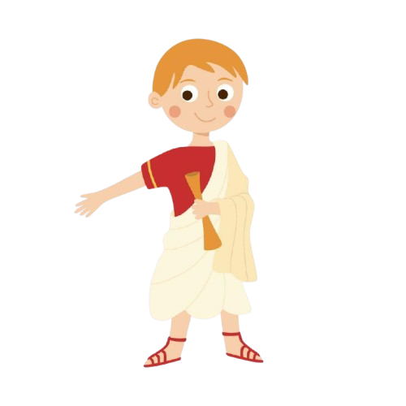
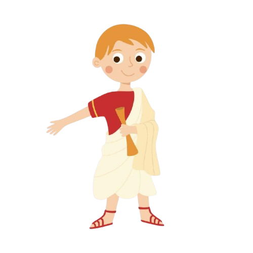
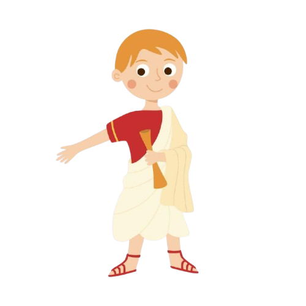

El acertijo dice así:
¿Cuál es el ser, que con una sola voz, camina a cuatro patas por la mañana, a dos al mediodía y a tres al atardecer? Elige una de las opciones que te ofrece Edipo:

Pulsa para volver atrás
 
